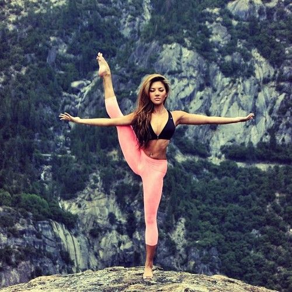
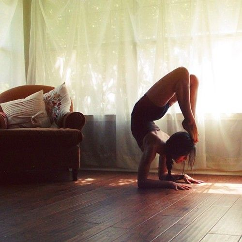
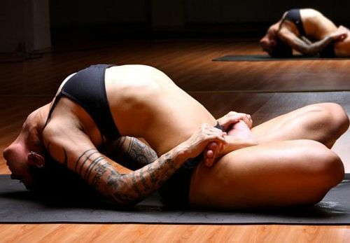

За последнее десятилетие йога стала достаточно популярным видом двигательной активности, ее предлагают почти в каждом фитнес-клубе. Студий йоги с разными направлениями, стилями и кардинально разными подходами тоже хватает. С одной стороны, йога стала более доступной и это хорошо. С другой стороны – мифов о йоге меньше не стало, а в таком предлагаемом разнообразии поди разберись. И если мы не понимаем, что делаем, что происходит в нашем теле и для чего нам нужна йога, то можем не только не улучшить свое состояние, но и нанести себе значительный вред неграмотно выстроенными занятиями и нашими чрезмерными стараниями.часто встречаясь с понятием «оздоровительная (или терапевтическая) йога», человек думает, что это только для больных или пожилых людей. Накопив определенный опыт и часто отвечая на однотипные вопросы, хочу развеять несколько мифов и стереотипов относительно оздоровительной йоги. Так что такое Оздоровительная йога? Это система комплексов физических и дыхательных упражнений, направленных как на общее укрепление, очищение и оздоровление тела, так и помогающих решить частные ситуации со здоровьем. Все техники достаточно мягкие и корректные, но, в то же время глубоко прорабатывающие тело, снимающие мышечные, тканевые, висцеральные и более глубокие напряжения, гармонизирующие не только тело, но и внутреннее состояние.
В первую очередь, оздоровительная йога предназначена, конечно, для тех, у кого есть те или иные проблемы со здоровьем и кто не может посещать более интенсивные классы по йоге. Люди, перенесшие операцию или травму и нуждающиеся в реабилитации, также являются потенциальными посетителями этого класса. Очень многие болезни успешно лечатся с помощью йоги и околойогических техник.Людям в возрасте тоже будет полезна оздоровительная йога для поддержания своего тела в тонусе, для лучшего самочувствия и решения каких-то возрастных  проблем.Но если у вас нет проблем со здоровьем и вы чувствуете себя сильным, крепким и бодрым, это совсем не означает, что класс оздоровительной йоги вам не подойдет. На этих занятиях вы сможете снять очень глубокие напряжения в теле с помощью техник, которые не даются на обычных классах йоги в силу их специфичности, поработать качественно с вниманием и дыханием. Если вы не стремитесь сесть в шпагат и стоять на голове или руках, то спокойно посещайте этот класс на постоянной основе или временной, чтобы перезагрузить свое состояние, расслабиться и прицельно уделить внимание оздоровительным техникам.В первую очередь, оздоровительная йога предназначена, конечно, для тех, у кого есть те или иные проблемы со здоровьем и кто не может посещать более интенсивные классы по йоге. Люди, перенесшие операцию или травму и нуждающиеся в реабилитации, также являются потенциальными посетителями этого класса. Очень многие болезни успешно лечатся с помощью йоги и околойогических техник.Людям в возрасте тоже будет полезна оздоровительная йога для поддержания своего тела в тонусе, для лучшего самочувствия и решения каких-то возрастных проблем.Но если у вас нет проблем со здоровьем и вы чувствуете себя сильным, крепким и бодрым, это совсем не означает, что класс оздоровительной йоги вам не подойдет. На этих занятиях вы сможете снять очень глубокие напряжения в теле с помощью техник, которые не даются на обычных классах йоги в силу их специфичности, поработать качественно с вниманием и дыханием. Если вы не стремитесь сесть в шпагат и стоять на голове или руках, то спокойно посещайте этот класс на постоянной основе или временной, чтобы перезагрузить свое состояние, расслабиться и прицельно уделить внимание оздоровительным техникам.В первую очередь, оздоровительная йога предназначена, конечно, для тех, у кого есть те или иные проблемы со здоровьем и кто не может посещать более интенсивные классы по йоге. Люди, перенесшие операцию или травму и нуждающиеся в реабилитации, также являются потенциальными посетителями этого класса. Очень многие болезни успешно лечатся с помощью йоги и околойогических техник.Людям в возрасте тоже будет полезна оздоровительная йога для поддержания своего тела в тонусе, для лучшего самочувствия и решения каких-то возрастных проблем.Но если у вас нет проблем со здоровьем и вы чувствуете себя сильным, крепким и бодрым, это совсем не означает, что класс оздоровительной йоги вам не подойдет. На этих занятиях вы сможете снять очень глубокие напряжения в теле с помощью техник, которые не даются на обычных классах йоги в силу их специфичности, поработать качественно с вниманием и дыханием. Если вы не стремитесь сесть в шпагат и стоять на голове или руках, то спокойно посещайте этот класс на постоянной основе или временной, чтобы перезагрузить свое состояние, расслабиться и прицельно уделить внимание оздоровительным техникам.
Необходима тишина или допускается тихая спокойная музыка. Глаза закрыты, подбородок чуть приподнят. При этом нужно соблюсти внутреннюю тишину, остановить бег мысли и наблюдать себя изнутри, не делая никаких оценок. Внутреннее зрение направлено в область между ребрами. Медитация улучшает сон, снимает стресс, убирает усталость и множество психосоматических заболеваний, омолаживает организм. Следует приучать себя к позитивному отношению к жизни, учиться находить положительное во всем.Упражнения надо выполнять до границы усталости и до границы боли. Лучше недоделать упражнение, чем переделать и утомиться. Все упражнения йоги нацелены не на тренировочный результат, как в спорте, а на сам процесс. Как итог, важны  внутренние ощущения, которые получает человек в процессе занятий йогой, а не внешняя красота и амплитуда движений. В результате ощущений, полученных при сдавливании и растяжении рефлексогенных зон, происходит стимулирование работы всех систем и органов. Дыхательные упражнения в оздоровительной йоге следует выполнять под наблюдением специалиста.Необходима тишина или допускается тихая спокойная музыка. Глаза закрыты, подбородок чуть приподнят. При этом нужно соблюсти внутреннюю тишину, остановить бег мысли и наблюдать себя изнутри, не делая никаких оценок. Внутреннее зрение направлено в область между ребрами. Медитация улучшает сон, снимает стресс, убирает усталость и множество психосоматических заболеваний, омолаживает организм. Следует приучать себя к позитивному отношению к жизни, учиться находить положительное во всем.Упражнения надо выполнять до границы усталости и до границы боли. Лучше недоделать упражнение, чем переделать и утомиться. Все упражнения йоги нацелены не на тренировочный результат, как в спорте, а на сам процесс. Как итог, важны внутренние ощущения, которые получает человек в процессе занятий йогой, а не внешняя красота и амплитуда движений. В результате ощущений, полученных при сдавливании и растяжении рефлексогенных зон, происходит стимулирование работы всех систем и органов. Дыхательные упражнения в оздоровительной йоге следует выполнять под наблюдением специалиста.Необходима тишина или допускается тихая спокойная музыка. Глаза закрыты, подбородок чуть приподнят. При этом нужно соблюсти внутреннюю тишину, остановить бег мысли и наблюдать себя изнутри, не делая никаких оценок. Внутреннее зрение направлено в область между ребрами. Медитация улучшает сон, снимает стресс, убирает усталость и множество психосоматических заболеваний, омолаживает организм. Следует приучать себя к позитивному отношению к жизни, учиться находить положительное во всем.Упражнения надо выполнять до границы усталости и до границы боли. Лучше недоделать упражнение, чем переделать и утомиться. Все упражнения йоги нацелены не на тренировочный результат, как в спорте, а на сам процесс. Как итог, важны внутренние ощущения, которые получает человек в процессе занятий йогой, а не внешняя красота и амплитуда движений. В результате ощущений, полученных при сдавливании и растяжении рефлексогенных зон, происходит стимулирование работы всех систем и органов. Дыхательные упражнения в оздоровительной йоге следует выполнять под наблюдением специалиста.